kúpanie
výhľad
príroda
jedlo
kultúra
let
must-do
1
21. júla (utorok) · Príchod
let Košice → Viedeň → Ponta Delgada · západ ostrova
05:25
Odlet Košice (Barca Arpt) → Viedeň
OS654 · Austrian Airlines · Embraer 195 · Economy Light. Pristátie vo Viedni (Terminal 3) o 06:20.
let
08:10
Odlet Viedeň (Terminal 3) → Ponta Delgada
Prestup vo Viedni 1h 50m. OS497 · Austrian Airlines · Airbus 320neo · Economy Light. Pristátie v Ponta Delgada (Nordela Arpt) o 11:35 miestneho času. Celková doba cesty 8h 10m.
let
11:45
Vyzdvihnutie auta – Wonder Islands
Prenájom auta priamo po pristátí na letisku Nordela.
trasa
💡 Fun fact
Ponta Delgada bola pôvodne rybárska dedina. Mestský status získala až v roku 1546, keď zemetrasenie zničilo dovtedajšie hlavné mesto ostrova Vila Franca do Campo. Symbolom mesta sú Portas da Cidade – barokové brány z roku 1783 postavené z čierneho čadiča priamo pri vtedajšom prístave.
12:15
Obed – Jardim Natural Food and Coffee
Krátka zastávka na obed v Ponta Delgada hneď po vyzdvihnutí auta – zdravé jedlá, šaláty, čerstvé sendviče a dobrá káva pred cestou na západ ostrova.
jedlo
13:30
Miradouro do Pico do Carvão
Krátka zastávka na panorámu stredu ostrova, cestou smerom na západ.
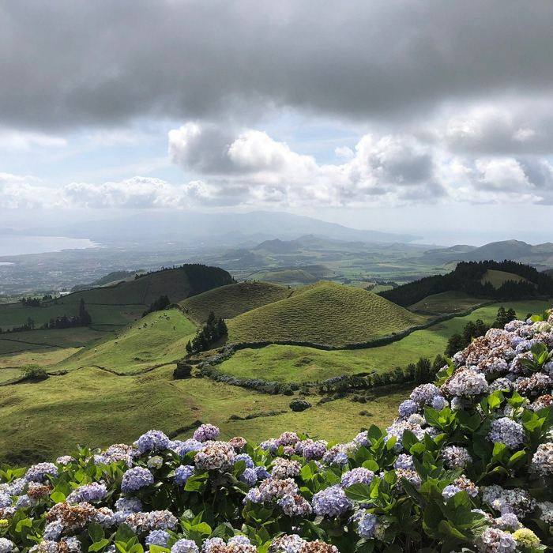
výhľad
💡 Fun fact
Práve tu pri Muro do Carvão začína starý akvadukt "Muro das Nove Janelas" (Múr deviatich okien) – kamenná stavba zo 17.–18. storočia, ktorá privádzala vodu z vysokohorských jazier až do Ponta Delgada, na trase dlhej vyše 10 km. Otvory v múre nie sú len ozdobné – v tejto veternej oblasti prepúšťajú nárazy vetra, aby stavbu nepoškodili.
14:15
Okruh od Muro do Carvão – jazerá Serra Devassa
Krátky nenáročný okruh (nie celý trek Serra Devassa) so štartom a koncom pri parkovisku Muro do Carvão: Lagoa do Carvão → Lagoas Empadadas → Casa da Lagoa → Lagoa Rasa → Lagoa do Caldeirão Grande, s krátkou odbočkou k Lagoa de Éguas. ~1–1,5 hod, rovinatý terén, lesná cesta.
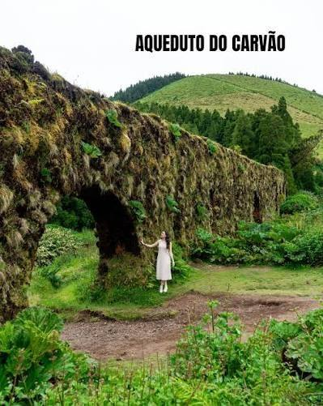
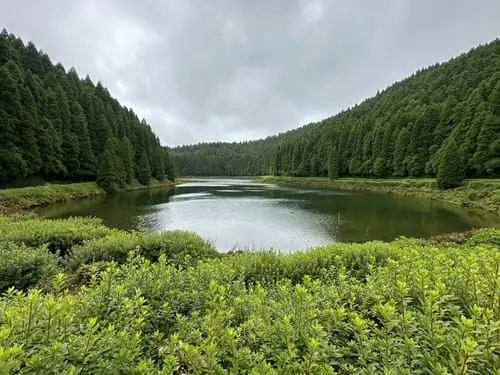
príroda
💡 Fun fact
Tento okruh je len malým úsekom dlhého trailu PR05 SMI Serra Devassa, ktorý pokračuje až k Lagoa do Canário a Miradouro da Grota do Inferno – vy si vezmete len jazernú časť pri Muro do Carvão. Lagoa das Éguas leží v kráteri Pico das Éguas vo výške takmer 873 m – je to najvyššie položené jazero na celom São Miguel.
15:45
Miradouro da Ponta do Escalvado
R. da Carreira 37, Várzea. Výhľad na pobrežie západného cípu ostrova.
výhľad
💡 Fun fact
Celé západné pobrežie okolo Ferrarie je jedna z geologicky najaktívnejších oblastí São Miguel – ostrov tu leží presne nad stykom, kde sa stretávajú tri tektonické platne (Severoamerická, Euroázijská a Africká), preto sa práve tu koncentruje toľko sopečných a termálnych javov na malom priestore.
16:30
Miradouro da Ilha Sabrina
Výhľad na miesto, kde v roku 1811 dočasne vystúpil z mora sopečný ostrov Sabrina.
výhľadpríroda
💡 Fun fact
V júni 1811 tu podmorská sopečná erupcia doslova vytvorila nový ostrov – vysoký až 100 m. Britská vojnová loď HMS Sabrina bola pri tom a jej kapitán James Tillard na ostrove vztýčil britskú vlajku a vyhlásil ho za územie Veľkej Británie ako "Sabrina Island". Spor s Portugalskom vyriešila sama príroda: do pár mesiacov ostrov erózia rozpustila späť do mora a diplomatický problém tak zanikol sám od seba.
17:30
Farol da Ferraria
Maják na čiernych lávových útesoch – západ slnka nad Atlantikom. (Kúpanie v termálnom bazéne sme presunuli na 22.7., kedy lepšie sedí odliv – pozri Deň 2.)
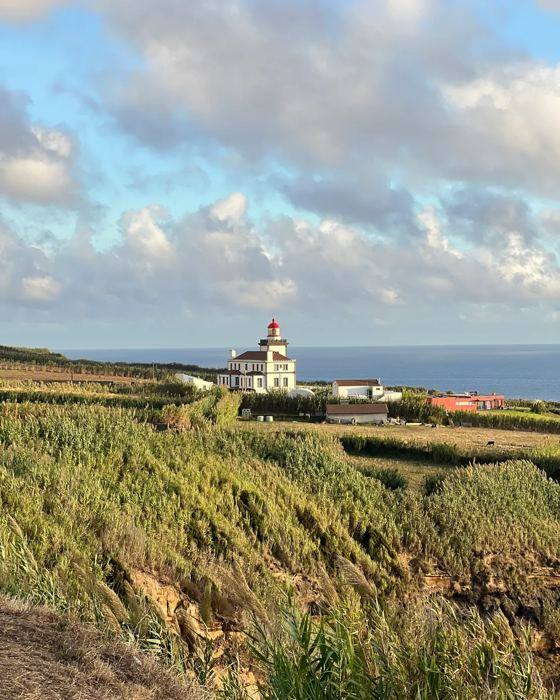
výhľadpríroda
💡 Fun fact
Maják funguje od roku 1901, je vysoký 18 m a stojí až 107 m nad morom – je druhý najstarší na São Miguel a najväčší v celých Azorách. Hneď pod ním, priamo v mieste kde láva kedysi stiekla do oceánu, vyvierajú podmorské termálne pramene – jediné miesto v Azorách, kde sa dá kúpať v mori nahriatom priamo sopkou.
18:00
Presun do Ponta Delgada, ubytovanie a nákup
~30 min z Ferrarie späť. Check-in je možný až od 17:00, takže sedí presne teraz. Cestou zastávka v supermarkete na raňajky a základné zásoby.
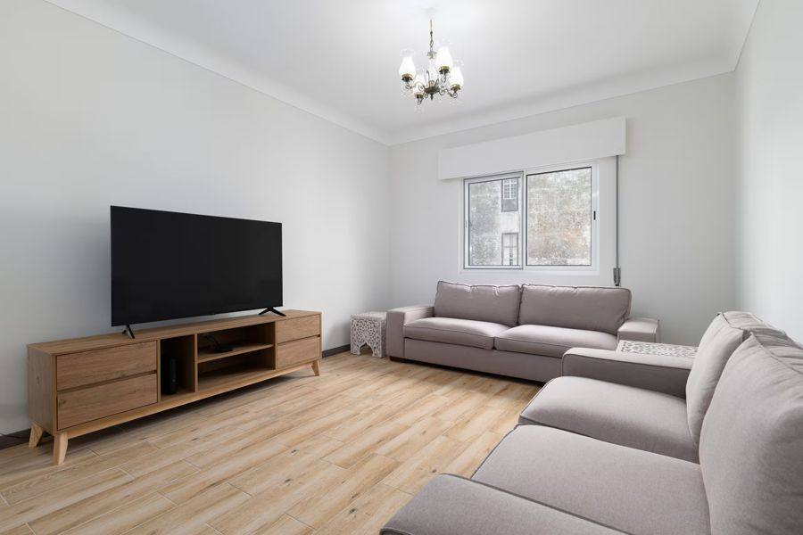
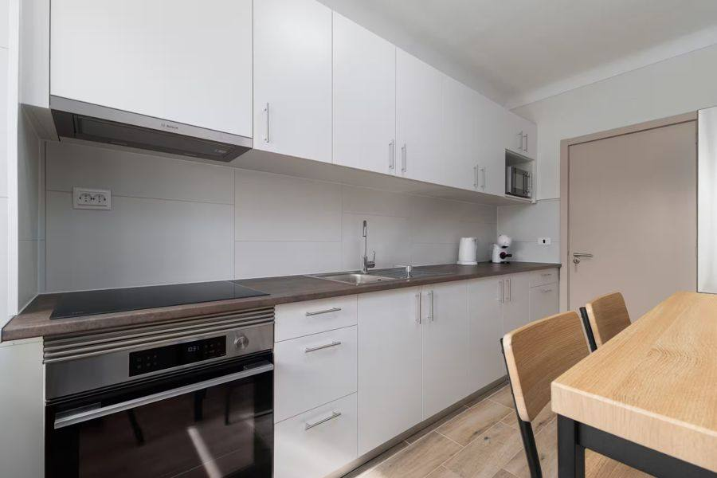
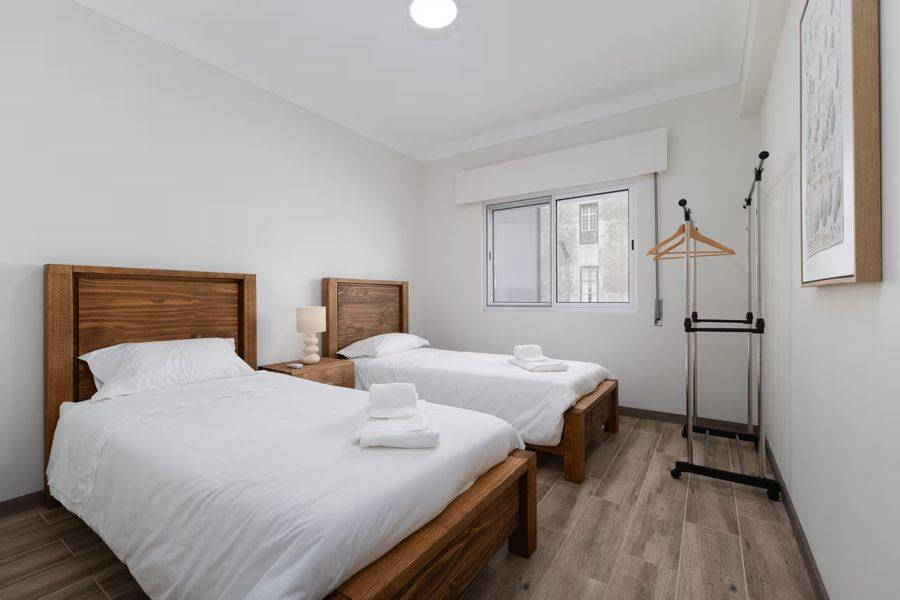
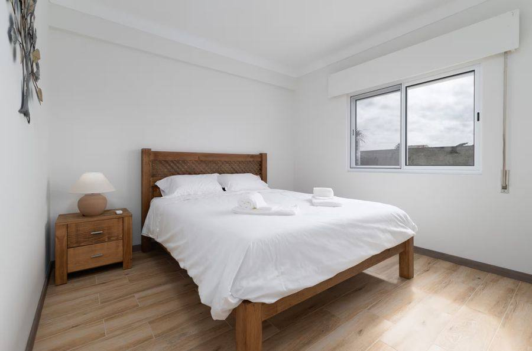
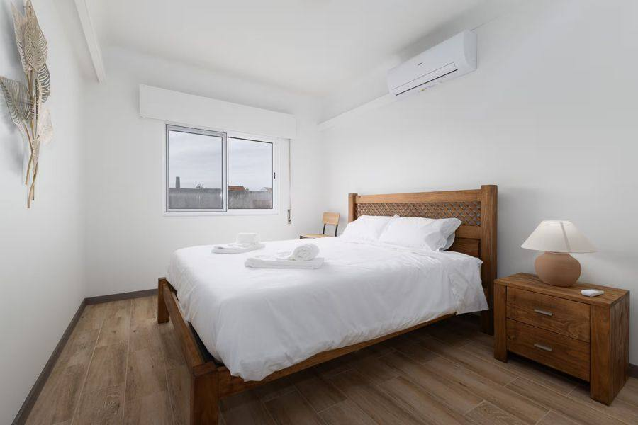
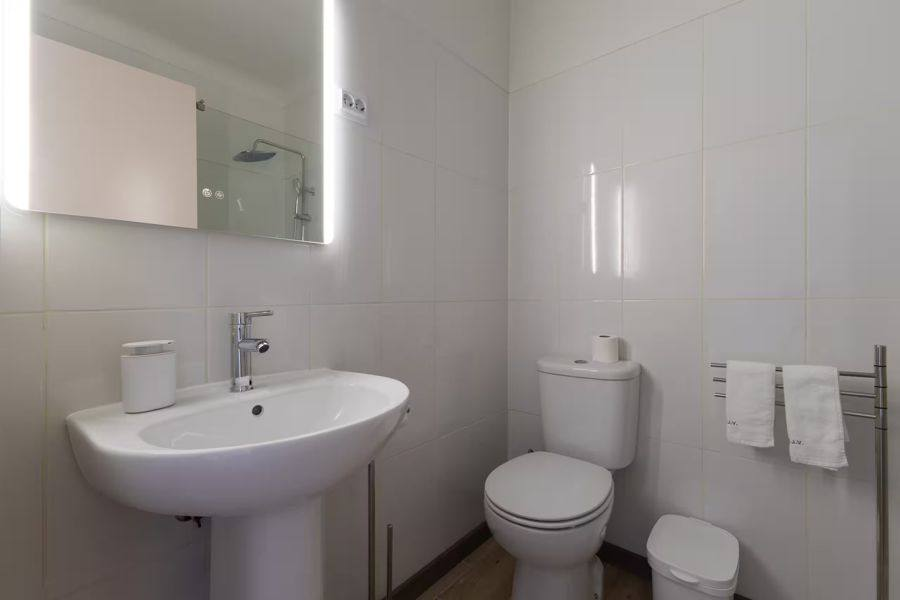
trasa
20:00
Večera – Quinta dos Açores alebo Adega do Mestre André
Prvý večer si odpusťte varenie. Obe miesta ponúkajú tradičnú azorskú kuchyňu v okolí západu ostrova.
jedlo
Tip: Z letiska do Ponta Delgada ~15 min. Na západ ostrova ďalších ~30 min po EN1-1A. Po dlhom lete (8h10m s prestupom) rátaj s únavou – tento okruh je nenáročný, hlavne výhľady a krátka prechádzka.
🎒 Zbaľ si na dnes: pohodlnú obuv na krátku prechádzku k jazerám, veterovku/pršiplášť (pobrežie pri Ferrarii býva veterné), opaľovací krém, vodu, malý snack na cestu z letiska.
2
22. júla (streda) · Sete Cidades
Grota do Inferno · Vista do Rei · hortenzie · dvojfarebné jazerá
7:30
Raňajky doma – Ponta Delgada
Pokojné raňajky z včerajších zásob predtým, ako vyrazíte do vnútrozemia.
jedlo
8:00
Presun na parkovisko PRC05-SMI (Serra Devassa)
~25–30 min z Ponta Delgada. Parkovisko oproti lesnej ceste Mata do Canário, kde začína aj trilho Serra Devassa.
trasa
8:30
Miradouro da Grota do Inferno
Z parkoviska PRC05-SMI tam a späť, ~4 km / ~1–1,5 hod, nenáročný terén. Jeden z najkrajších výhľadov na Azorách – naraz uvidíte Lagoa Azul, Lagoa Verde aj Lagoa de Santiago pod sebou.
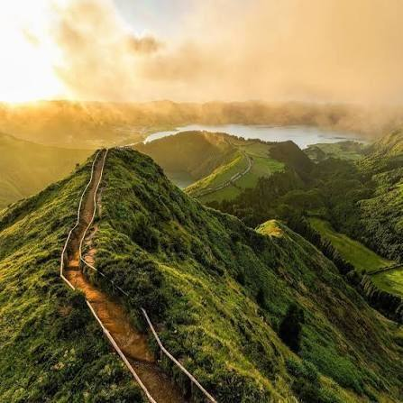
prírodavýhľadmust-do
💡 Fun fact
Grota do Inferno (aj Boca do Inferno) je hlboká roklina vyhĺbená dažďovou eróziou. Odtiaľto je vidno naraz tri jazerá kaldery Sete Cidades a je to jeden z najfotografovanejších záberov celých Azor – používa sa v turistických kampaniach aj na billboardoch. Trasa vedie cez Serra Devassa, oblasť medzi 750–900 m n. m., kde sa nachádza najviac jazier na celom ostrove.
10:00
Miradouro da Vista do Rei
Najslávnejší výhľad na Azorách – dvojfarebné jazerá Sete Cidades z hrany kaldery, priamo pri opustenom hoteli Monte Palace. (4.8★ · 12 258 recenzií)
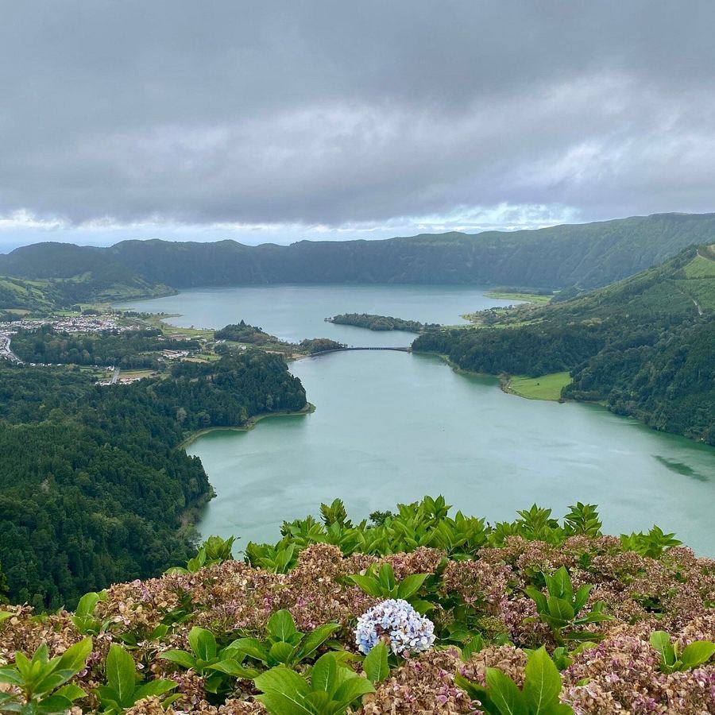
výhľadmust-do
10:30
Estrada Hortênsia
Scenic drive dolu do kaldery, cesta lemovaná modrými a fialovými hortenziami (najkrajšie kvitnú práve v júli).
prírodatrasa
11:00
Miradouro do Cerrado das Freiras
Bližší, nižšie položený výhľad priamo na Lagoa Azul a Ponte dos Regos – most spájajúci obe jazerá.
výhľad
11:20
Miradouro da Lagoa de Santiago
Menej navštevovaný výhľad na tretie, menšie jazero kaldery – Lagoa de Santiago, oddelené od dvojice Azul/Verde.
výhľad
💡 Fun fact
Legenda hovorí, že Lagoa Azul a Lagoa Verde vznikli zo sĺz zakázanej lásky – modrooká princezná Antília sa zamilovala do zelenookého pastiera, kráľ im zakázal stretávanie a pri poslednom rozlúčení každý z nich plakal slzami farby svojich očí. V skutočnosti farby spôsobujú riasy a rôzna hĺbka vody, ale legenda je taká populárna, že sa spomína takmer pri každom miradoure.
11:45
Canal das Sete Cidades (Ponte dos Regos)
Plytký kanál a most, ktorý oddeľuje modré a zelené jazero – v skutočnosti je to jedna súvislá vodná plocha. Pekné miesto na fotky s oboma farbami naraz.
výhľadpríroda
12:00
Prechádzka – Canal das Sete Cidades → Ponta do Lago das Sete Cidades
Pokojná prechádzka popri brehu jazera smerom k dedinke Sete Cidades. Rovinatá, nenáročná.
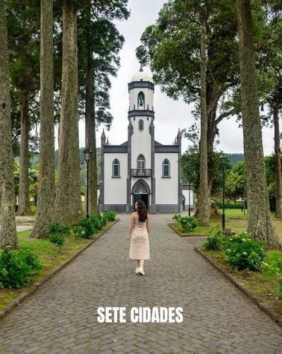
príroda
13:00
Obed – Lagoa Azul Restaurant
Rua da Caridade 18, Sete Cidades. Tradičná azorská kuchyňa, populárny je aj bufetový systém cez víkendy. Rezervácia odporúčaná v sezóne (+351 916 405 896).
jedlo
14:30
Ponta da Ferraria – prírodné termálne bazény
Presun zo Sete Cidades ~20 min (EN1-1A/EN9). Parkovisko: Parque Estacionamento Ferraria. Jediné miesto na svete, kde podmorský termálny prameň nahrieva priamo morskú vodu. Odliv dnes okolo 14:49 – prichádzaš presne do najteplejšieho okna. Skala je klzká, odporúčajú sa topánky do vody, v bazéne sú lano a rebríky na pridržanie.
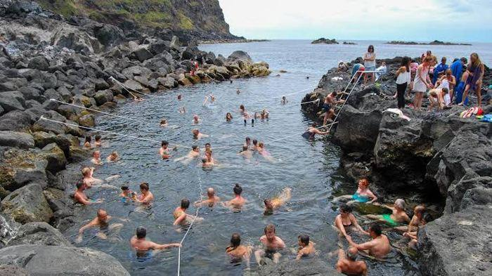
kúpanieprírodamust-do
💡 Fun fact
Ponta da Ferraria leží presne v mieste, kde láva kedysi stiekla do oceánu. Teplota vody kolíše podľa polohy v bazéne – bližšie k prameňu je takmer horúca, bližšie k otvorenému moru studenšia. Je to jediný prírodný termálny bazén na svete priamo v oceáne, voľne prístupný a zadarmo.
16:00
Oddych na Praia das Milícias
Presun na Praia das Milícias pri Ponta Delgada. Čas na zaslúžený oddych na najväčšej pláži v okolí mesta – kúpanie v Atlantiku, opaľovanie, čítanie knihy alebo prechádzka po čiernom vulkanickom piesku. Kto bude mať chuť na trochu viac akcie, môže si priamo na pláži požičať surf alebo si rezervovať lekciu s inštruktorom.
plážrelax
💡 Fun fact
Praia das Milícias je najväčšou plážou v okolí Ponta Delgada. Jej charakteristický čierny vulkanický piesok vznikol rozpadom lávových hornín a kontrast tmavej pláže s tyrkysovým Atlantikom vytvára jednu z najfotogenickejších scenérií na ostrove São Miguel.
19:30
Večerná grilovačka v Parque de Merendas
Cestou späť do Ponta Delgada zastávka v jednom z typických azorských piknikových areálov. Kamenné grily, drevené stoly, pitná voda a pokojná atmosféra sú ideálnym miestom na vlastnú BBQ večeru pod holým nebom – presne tak, ako to robia miestni.
jedlolokálnerelax
💡 Fun fact
Verejné "Parques de Merendas" nájdeš po celých Azoroch. Väčšina z nich je bezplatná a vybavená grilmi, stolmi, pitnou vodou a často aj toaletami. Miestni sem cez víkendy chodia grilovať s rodinou a priateľmi – je to jedna z najtypickejších azorských tradícií.
🎒 Zbaľ si na dnes: turistickú obuv (Serra Devassa je vo výške 750–900 m, býva chladnejšie a veternejšie), pršiplášť, plavky + uterák + topánky do vody (kúpanie v Ferrarii poobede), čelovku/baterku a nepremokavú obuv na tunel, dostatok vody, desiatu/keksík, hotovosť na obed.
3
23. júla (štvrtok) · Veľryby & tunely
whale watching · Rota da Água · Janela do Inferno · centrum Ponta Delgada
9:00
Whale watching tour – Marina Ponta Delgada
Odchod z Marina Portas do Mar priamo v Ponta Delgada. Bezpečnostný briefing s morským biológom ~15–20 min pred vyplávaním, samotná plavba ~2,5–3 hod. V júli sú bežné delfíny (škvrnité, tmavé, skákavé) a rezidentné vorvane; sezónne aj vráskavce. Rezervuj vopred (napr. Futurismo, Picos de Aventura).
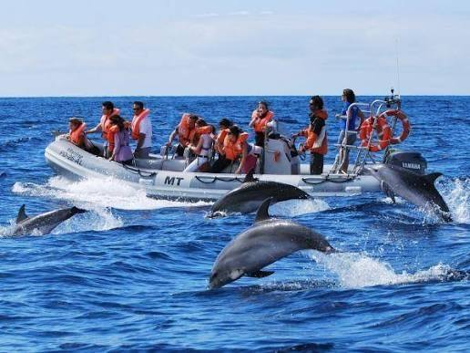
prírodamust-do
💡 Fun fact
V okolí Azor bolo zaznamenaných až 28 druhov veľrýb a delfínov – takmer tretina všetkých druhov na svete. Vorvane tu žijú celoročne, časť populácie sa tu ani nesťahuje. Do roku 1984 sa tu ešte lovili veľryby harpúnou z otvorených veslových lodí; dodnes sú pozdĺž pobrežia vidieť staré "vigias" – kamenné pozorovateľne, odkiaľ kedysi hľadači veľrýb signalizovali lodiam, kde sa objavil vorvaň. Dnes slúžia tie isté vigias na to isté – len namiesto harpúny nasleduje fotoaparát.
12:00
Presun do oblasti Lagoa (Remédios)
~15 min z Ponta Delgada. Trailhead PRC37 SMI je pri Casa da Água – Trail Point, starej mliekarni premenenej na turistické centrum, v miestnej časti Remédios.
trasa
12:30
Obed – Lagoa
Rýchly obed v mestečku Lagoa pred poobedňajšou túrou – lokálne tašky, ryby, jednoduchá kuchyňa.
jedlo
14:00
PRC37 SMI – Rota da Água – Janela do Inferno
Okruhová trasa z Casa da Água (Remédios), cez viacero starých vodných tunelov (treba čelovku/baterku) až k Janela do Inferno – zvislej skalnej stene plnej prameňov. ~7,6 km, ~2–2,5 hod, stredne náročná.
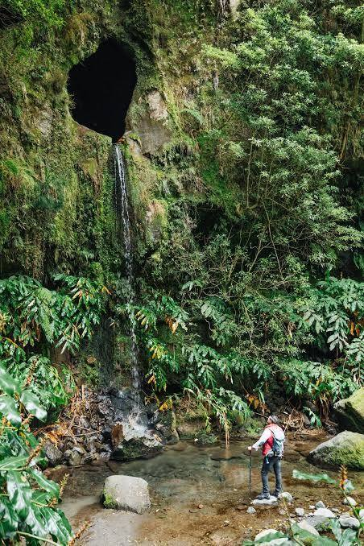
prírodakultúramust-do
💡 Fun fact
Trasa vedie cez sústavu starých vodovodných tunelov, ktoré kedysi privádzali vodu z vnútrozemia do obcí na pobreží. Janela do Inferno ("Okno do pekla") je vertikálna skalná stena presiaknutá prameňmi – žijú tu aj mloky (Triturus cristatus) vo všetkých štádiách vývoja, od larvy po dospelého jedinca, čo je pre tento druh na Azorách nezvyčajne bohaté nálezisko.
17:00
Igreja Matriz de São Sebastião & centrum Ponta Delgada
Návrat do Ponta Delgada (~15 min od Lagoa). Krátka prechádzka historickým centrom – gotický kostol Igreja Matriz de São Sebastião zo 16. storočia priamo pri Portas da Cidade.
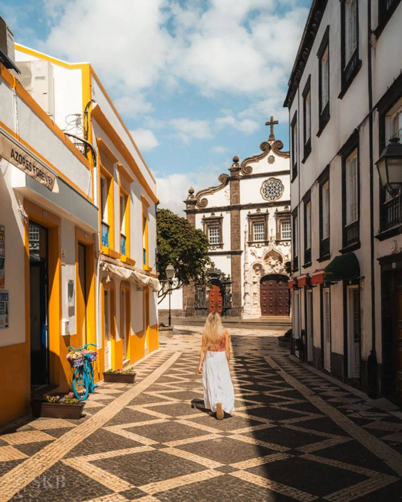
kultúra
17:45
Jardim Botânico António Borges
Historická botanická záhrada z 19. storočia v centre mesta – exotické stromy, jazierka, tieň a pokoj po celodennom programe. Vstup zadarmo.
príroda
19:00
Večera doma – Ponta Delgada
Po plavbe, hike aj prechádzke centrom pokojná večera doma.
jedlo
Tip: Vezmi si liek proti morskej chorobe vopred, ak máš sklony k nej – loď je na otvorenom oceáne. Trailhead PRC37 je len ~15 min od marina, takže sa to do jedného dňa pohodlne zmestí aj s obedom medzi tým.
🎒 Zbaľ si na dnes: nepremokavú bundu a niečo teplejšie na loď (na otvorenom mori fúka aj v lete), liek na morskú chorobu ak treba, turistickú obuv, čelovku/baterku na tunely, nepremokavú obuv (v tuneloch môžu byť mláky), vodu, desiatu/keksík.
4
24. júla (piatok) · Lagoa do Fogo & Furnas
kráterové jazero · vodopád · termály · rumáreň
7:30
Presun na Lagoa do Fogo
~35–40 min z Ponta Delgada po EN5-2A. Aj o 7:30 to je v pohode pred deadline 9:00, kedy sa cesta v lete zatvára pre súkromné autá (potom len kyvadlová doprava, 5€/os).
trasa
8:10
Miradouro da Lagoa do Fogo
Hlavný, najbližší výhľad na kráterové jazero, s najväčším parkoviskom v okolí ("Parque de Estacionamento"). Odtiaľto vedie aj krátka cestička dolu k jazeru (~30–40 min tam a späť), kúpanie v jazere je však prísne zakázané.
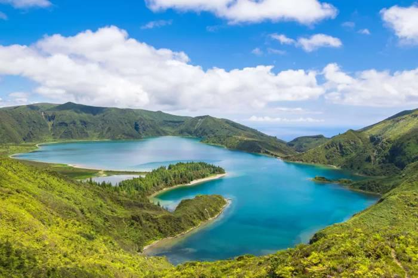
výhľadprírodamust-do
💡 Fun fact
Lagoa do Fogo ("Jazero ohňa") leží v kaldere sopky Água de Pau vo výške takmer 950 m – je to najvyššie položené veľké jazero na ostrove. Meno dostalo po výbuchu z roku 1563, hoci sopka odvtedy nevybuchla. Je to prísne chránená rezervácia s endemickými rastlinami a vtákmi, preto je kúpanie aj zostup mimo vyznačených chodníkov zakázaný.
8:35
Miradouro da Barrosa
O kúsok vyššie po tej istej ceste (EN5-2A), vo výške 876 m – iný uhol pohľadu na jazero aj na Serra das Lombadas. Parkovanie priamo pri ceste, menšie ako pri hlavnom miradoure.
výhľad
9:05
Presun k Salto do Cabrito
~15–20 min smerom na Termas das Caldeiras / Ribeira Grande.
trasa
9:25
Cascata do Salto do Cabrito
Zaparkuješ priamo pri vodopáde (parkovisko dolu, prístupné autom po strmšej ceste) – k vode je to potom len 2–3 min chôdze, netreba celý 2–3 hod okruh PRC29. Bez kúpania – len rýchla zastávka pozrieť si vodopád a kovové lávky nad potrubím.
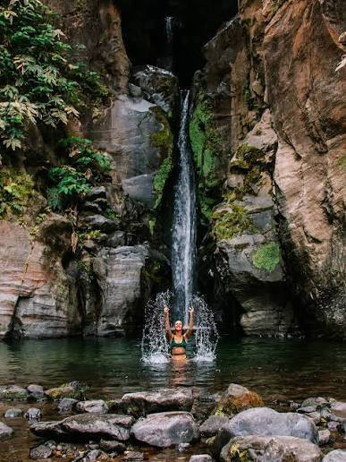
prírodavýhľad
9:50
Presun k Fábrica de Licores A Mulher de Capote
Presun k likérke A Mulher de Capote (over si čas jazdy podľa aktuálnej trasy).
trasa
10:30
Azorean Spirit / Fábrica de Licores A Mulher de Capote
Zastávka pri výrobe azorských likérov a destilátov. Ochutnávka miestnych špecialít – ginjinha, ovocné likéry alebo nápoje z tropického ovocia ostrova.
kultúrajedlo
💡 Fun fact
Rodinná likérka A Mulher de Capote vyrába tradičné azorské likéry podľa receptúr odovzdávaných z generácie na generáciu. Nájdeš tu aj menej známe príchute z marakuje, ananásu či miestnych citrusov pestovaných na São Miguel.
12:00
Presun do Furnas
~20 min.
trasa
12:20
Obed – Queijaria Furnense
Krátka zastávka v miestnej syrárni a bistre. Ochutnaj tradičné azorské syry, čerstvé sendviče, toasty alebo burgre pripravené z lokálnych surovín. Ideálne ľahší obed pred popoludňajším programom vo Furnas.
jedlolokálne
12:50
Jardim Público da Courela & Caldeiras das Furnas
Sopečné prieduchy priamo v centre dediny – vriace bahenné jazierka, para a charakteristická vôňa síry vytvárajú jedinečnú atmosféru. Nezabudni ochutnať miestne minerálne pramene s rôznym zložením a teplotou. Vedľa sa nachádza aj malé informačné centrum OMIC s mapou všetkých pitných prameňov vo Furnas.
prírodakultúramust-do
13:35
Fumarolas Lagoa das Furnas
Drevené mostíky nad bublajúcimi krátermi pri jazere – tu sa varia hrnce s Cozido, uvidíte to na vlastné oči. Vstup 3€.
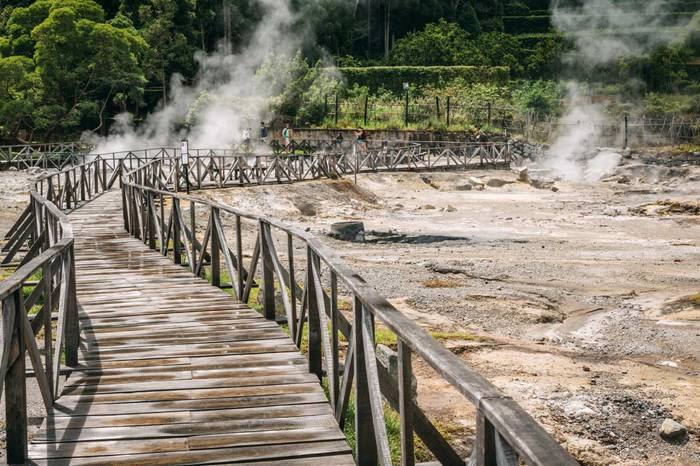
prírodakultúramust-do
14:00
Parque da Grená
18 ha lesoparku s trasami, vodopádmi a historickou villou z roku 1855 – dajte si na to poriadne dve hodinky. Vstup 10 € a v cene sú aj vonkajšie geotermálne vírivky ukryté ku koncu trasy (nie sú extra spoplatnené, len si nezabudni plavky a uterák).
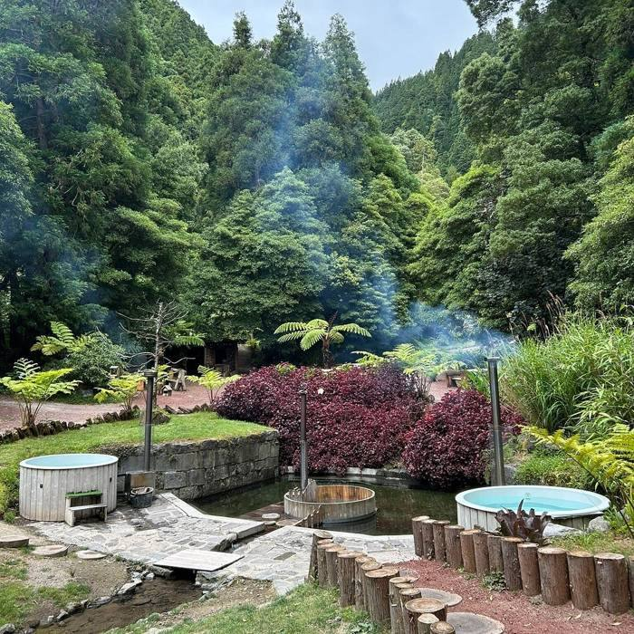
kúpanieprírodamust-do
17:30
Návrat domov & oddych
Po celom dni vo Furnas návrat na ubytovanie. Čas osprchovať sa, prezliecť, trochu si oddýchnuť a načerpať energiu pred večerným programom.
relax
Tip: Cozido das Furnas rezervuj VOPRED (Tony's / Zé do Pico) a rovno na neskorší čas. Poça da Dona Beija je otvorená do 23:00 – skvelá voľba po západe slnka pod hviezdami.
🎒 Zbaľ si na dnes: plavky, uterák, topánky do vody (Parque da Grená aj Poça da Dona Beija), pohodlnú obuv, pršiplášť a niečo teplejšie na skoré ráno pri Lagoa do Fogo (býva tam veterno a chladno), hotovosť (Parque da Grená 10€, fumaroly 3€, Poça da Dona Beija ~8€, ochutnávka likérov pár €), vodu, desiatu/keksík.
5
25. júla (sobota) · Oslíky & východ
rescued donkeys · Nordeste · kaskády
9:30
Hike with Happy Rescued Donkeys
2-hodinová prechádzka so zachránenými oslíkmi. Organizuje Bethany. Už objednané ✓
prírodamust-do
💡 Fun fact
Osly priviezli na Azory portugalskí kolonisti už v 15. storočí a celé stáročia boli nevyhnutnou súčasťou života na ostrove. Útulok "Donkeys and Friends" zachraňuje staré, opustené a zanedbané oslíky a umožňuje návštevníkom spoznať ich počas pokojných prechádzok prírodou.
12:15
Obed – Água de Alto
Odporúčame Restaurante O Tio Lólo alebo Bar Caloura. Čerstvé ryby, grilované mäso a pokojná atmosféra s výhľadom na oceán.
jedlolokálne
13:00
Miradouro da Nossa Senhora da Paz
Jedna z najikonickejších vyhliadok na São Miguel s výhľadom na mestečko Vila Franca do Campo, oceán a malý vulkanický ostrovček Ilhéu de Vila Franca. K vyhliadke vedie krásne schodisko zdobené tradičnými azorskými dlaždicami azulejos.
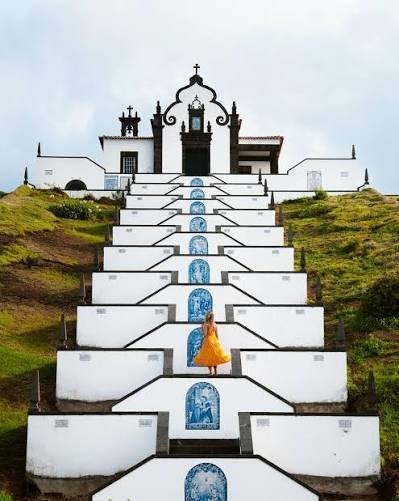
výhľadkultúramust-do
💡 Fun fact
Vyhliadka je pomenovaná podľa kaplnky Ermida de Nossa Senhora da Paz z roku 1764. Podľa legendy bola postavená na mieste, kde pastier našiel obraz Panny Márie ukrytý v jaskyni.
13:45
Ermida de Nossa Senhora das Vitórias
Jedna z najfotogenickejších kaplniek na Azoroch. Neogotická stavba z konca 19. storočia stojí na brehu jazera Furnas a pripomína malý anglický kostolík uprostred exotickej prírody.
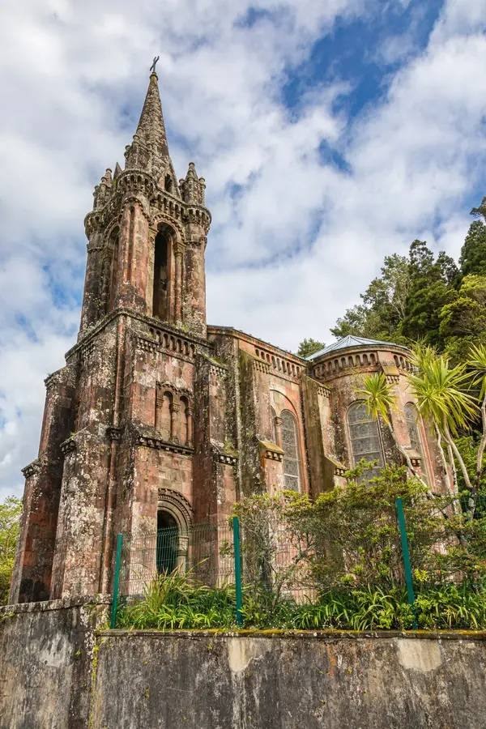
kultúravýhľad
💡 Fun fact
Kaplnku dal postaviť José do Canto ako rodinné mauzóleum pre svoju manželku. Materiál aj vitráže boli privezené z Francúzska a stavba patrí medzi najneobvyklejšie sakrálne budovy na Azoroch.
15:00
Cascata do Salto do Prego
Krátky trek cez les vedie k jednému z najkrajších vodopádov ostrova. Krištáľovo čisté jazierko pod vodopádom je ideálne na osvieženie počas teplého dňa.
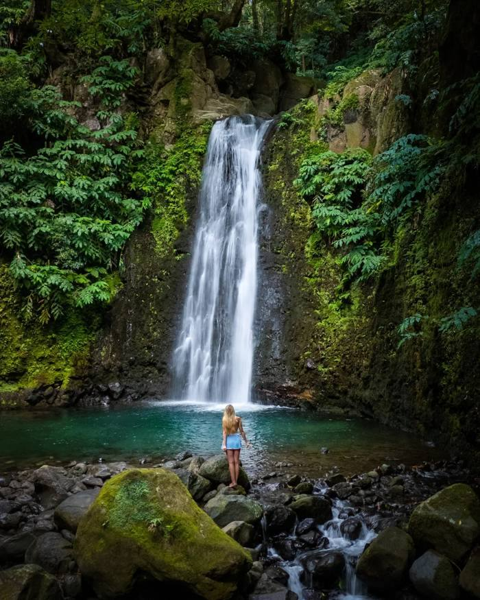
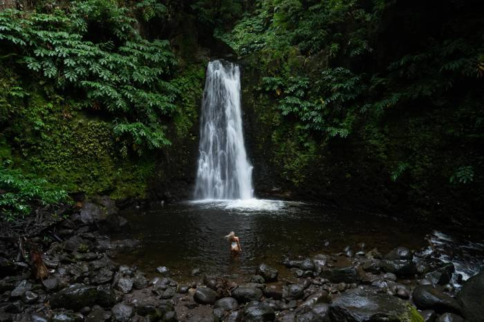
prírodakúpanie
💡 Fun fact
Cestou prejdeš cez opustenú dedinku Sanguinho, ktorú obyvatelia v minulom storočí opustili počas veľkej emigrácie do Ameriky. Dnes sa postupne obnovuje a patrí medzi najmalebnejšie miesta ostrova.
17:15
Miradouro da Ponta do Sossego
Rozkvitnuté záhrady, hortenzie, piknikové altánky a jeden z najkrajších výhľadov na divoké východné pobrežie São Miguel.
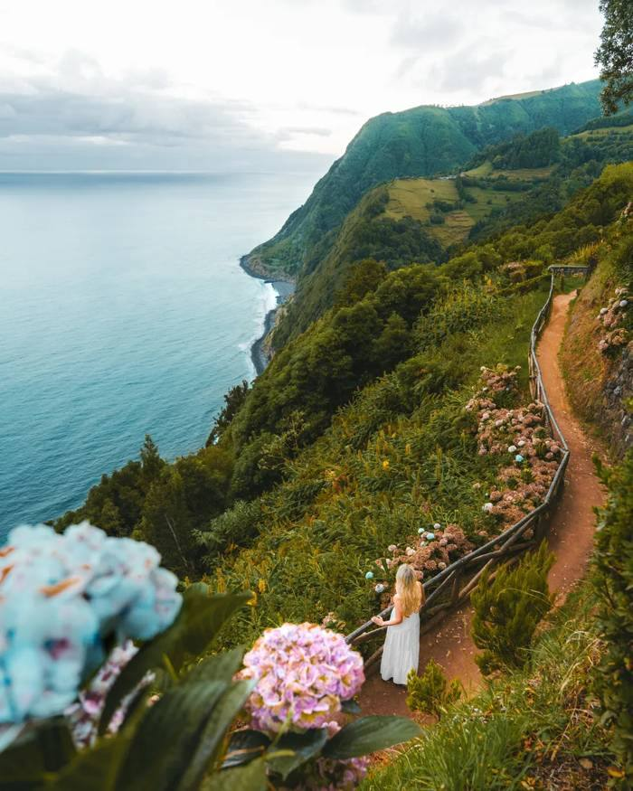
výhľadpríroda
💡 Fun fact
Miradouro je známe stovkami hortenzií, ktoré počas leta vytvárajú modro-fialový koberec. Pri dobrej viditeľnosti odtiaľ možno zazrieť aj migrujúce veľryby.
18:15
Miradouro da Ponta do Arnel
Výhľad na najstarší maják Azorov a dramatické útesy padajúce priamo do Atlantiku. Ak bude cesta otvorená, môžeš zísť autom až k majáku (pozor na veľmi strmý sklon).
výhľadprírodamust-do
💡 Fun fact
Farol do Arnel bol spustený do prevádzky v roku 1876 a je najstarším fungujúcim majákom na Azoroch. Cesta k nemu patrí medzi najstrmšie asfaltové cesty v Portugalsku – miestami má sklon viac ako 30 %.
Tip: Ak budeš mať po vodopáde ešte energiu, zober si plavky – jazierko pod Salto do Prego je jedno z najkrajších prírodných miest na kúpanie na ostrove.
🎒 Zbaľ si na dnes: pevnú turistickú obuv, plavky a uterák (Salto do Prego), pršiplášť, opaľovací krém, vodu, desiatu, repelent a hotovosť na obed.
6
26. júla (nedeľa) · Sever – čaj, vodopády & oceán
Gorreana · Ribeira dos Caldeirões · Nordeste · pláž
09:00
Gorreana Tea Factory
Jediná čajová plantáž v Európe – prehliadka továrne, starých strojov a bezplatná degustácia čerstvého čaju. Prejdite sa medzi zelenými terasami a kúpte si domov Green Pekoe alebo Orange Pekoe.
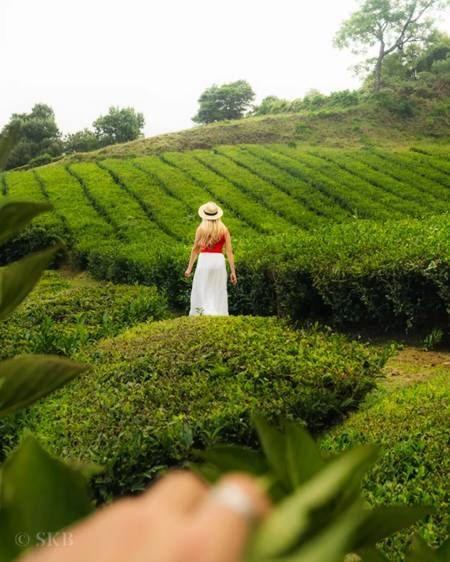
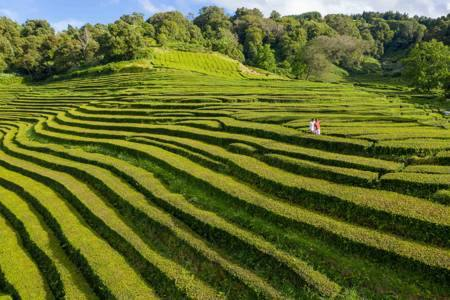
kultúraprírodamust-do
💡 Fun fact
Gorreana funguje od roku 1883 a je poslednou aktívnou čajovou plantážou v Európe. Časť pôvodných britských strojov z 19. a začiatku 20. storočia sa stále používa pri výrobe čaju.
10:30
Miradouro de Santa Iria
Jeden z najkrajších výhľadov severného pobrežia. Zastávka cestou na panoramatický výhľad – zelené útesy, hortenzie a dramatický Atlantik.
výhľadpríroda
💡 Fun fact
Miradouro de Santa Iria patrí medzi najfotografovanejšie vyhliadky na São Miguel. Za jasného počasia odtiaľto vidno niekoľko kilometrov dlhý úsek severného pobrežia.
11:00
Praia dos Moinhos
Krátka fotozastávka pri čiernom vulkanickom piesku – nebudeme tu tráviť veľa času, len pár minút na obzretie a fotky.
kúpanierelax
💡 Fun fact
Praia dos Moinhos patrí medzi obľúbené pláže miestnych obyvateľov. Jej názov pochádza zo starých vodných mlynov, ktoré kedysi fungovali v okolí.
11:30
Miradouro do Salto da Farinha
Výhľad na jeden z najvyšších vodopádov São Miguel, plus prechádzka dole k samotnému vodopádu Queda de Água do Salto da Farinha – s cestou tam a späť počítaj skôr s 1–1,5 hod, nie s krátkou zastávkou. Po daždi je obzvlášť pôsobivý.
výhľadpríroda
💡 Fun fact
Názov Salto da Farinha znamená „múčna kaskáda“ a odkazuje na staré vodné mlyny v okolí, ktoré využívali silu miestnych potokov na mletie obilia.
13:00
Obed – Restaurante Poço Azul
Obed hneď po Salto da Farinha. Čerstvá ryba, grilované mäso a tradičná azorská kuchyňa v pokojnej časti ostrova okolo Nordeste.
jedlolokálne
14:00
Parque Natural da Ribeira dos Caldeirões
Tropický park s vodopádmi, starými vodnými mlynmi a hustou zelenou vegetáciou. Krátka nenáročná prechádzka popri potoku – jedna z najkrajších zastávok severnej časti ostrova.
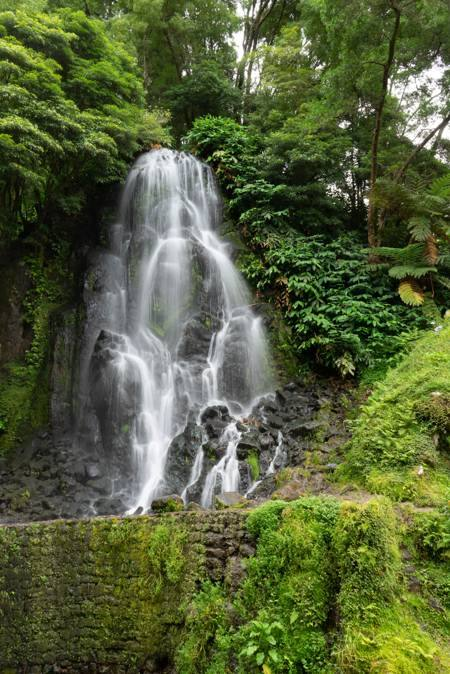
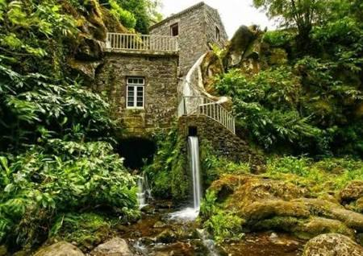
prírodavýhľad
💡 Fun fact
Park ukazuje tradičný spôsob života na Azoroch – voda z horských potokov kedysi poháňala mlyny, ktoré zásobovali celé okolité dediny múkou.
16:30
Návrat do Ponta Delgada
Pokojný návrat po celodennom okruhu severom ostrova, s časovou rezervou pred večerou.
relax
19:30
Praia do Areal de Santa Bárbara & TukaTula Beach Bar
Večerná atmosféra na jednej z najkrajších pláží ostrova. Krátka prechádzka po čiernom vulkanickom piesku, západ slnka nad Atlantikom a večera v obľúbenom TukaTula Beach Bare priamo na pláži. Rezervácia na 19:30.
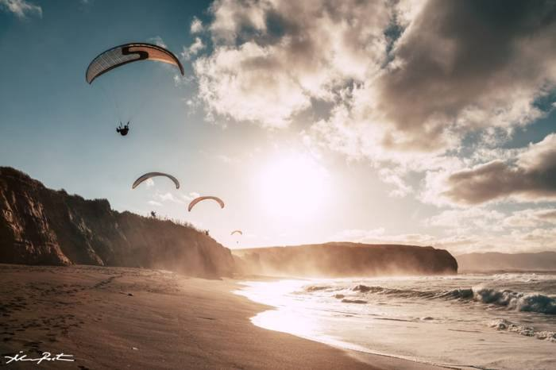
plážjedlorelax
Tip: Sever São Miguel je najkrajší práve v pomalom tempe – nechajte si čas na výhľady, hortenzie a krátke zastávky pri ceste. Tento okruh minimalizuje zbytočné vracanie sa. Večera v TukaTula je rezervovaná na 19:30, tak si nechajte čas na presun a prezlečenie.
🎒 Zbaľ si na dnes: plavky a uterák (Praia dos Moinhos aj TukaTula), pohodlnú obuv, pršiplášť, opaľovací krém, vodu, fotoaparát, hotovosť na čaj a malé občerstvenie.
7
27. júla (pondelok) · Posledný výlet
basket · posledné kúpanie
13:00
Ranný basketbal – Ponta Delgada
Zastávka na ranné zahádzanie alebo krátky pickup zápas. Možnosti: verejné ihrisko pri Portas do Mar priamo pri oceáne alebo kvalitnejšie outdoor ihrisko Mata do Café. Obe ihriská fungujú bez rezervácie – stačí prísť, ak je voľné.
športlokálne
💡 Tip
Portas do Mar je lepšia voľba, ak chceš stretnúť miestnych hráčov a zahrať si spontánny pickup pri oceáne. Mata do Café je pokojnejšie ihrisko vhodné na vlastný tréning alebo hru s partiou. Na obe miesta netreba rezerváciu – fungujú na princípe kto príde prvý, hrá.
17:30
Poça da Dona Beija – termálne bazény
Večerné kúpanie v prírodných termálnych bazénoch vo Furnas. Päť vonkajších bazénov s teplotou približne 38–40 °C ukrytých v tropickej záhrade pri potoku. Ideálne miesto na oddych po celom dni pod holým nebom, najmä keď sa zotmie a nad bazénmi sa drží para.
kúpanieprírodarelax
💡 Fun fact
Poça da Dona Beija využíva prirodzene vyhrievanú vulkanickú vodu z podzemia Furnas. Miesto dostalo meno podľa portugalskej telenovely z 80. rokov a dnes patrí medzi najobľúbenejšie večerné zážitky na São Miguel – hlavne vďaka atmosfére teplej vody, pary a osvetlenej tropickej záhrady.
Tip: Tento deň je zámerne voľnejší – ide o pohodový posledný deň s priestorom na oddych, prípadne dokúpenie suvenírov v Ponta Delgada popoludní. Odlet 28.7. je už o 12:25 – zbaľ sa dnes večer, ráno nechaj len voľný čas na kávu a vrátenie auta.
🎒 Zbaľ si na dnes: plavky, uterák a topánky do vody (Caloura aj Água de Alto), pohodlnú obuv, vodu, desiatu/keksík, opaľovací krém.
8
28. júla (utorok) · Odchod
let Ponta Delgada → Viedeň → Košice
9:30
Pokojné ráno & vrátenie auta – Wonder Islands
Posledná káva, vypratanie ubytovania, vrátenie prenajatého auta na letisku. Rátaj s rezervou pred odletom.
trasa
12:25
Odlet Ponta Delgada (Nordela Arpt) → Viedeň
OS498 · Austrian Airlines · Airbus 320neo · Economy Light. Pristátie vo Viedni (Terminal 3) o 19:30 miestneho času.
let
22:30
Odlet Viedeň (Terminal 3) → Košice
Prestup vo Viedni 3h. OS653 · Austrian Airlines · Embraer 195 · Economy Light. Pristátie v Košiciach (Barca Arpt) o 23:20. Celková doba cesty 8h 55m.
let
Tip: Dlhší prestup vo Viedni (3h) – dá sa v pokoji navečerať na letisku pred posledným úsekom domov.
🎒 Zbaľ si na dnes: doklady a letenky poruke, nabíjačky do príručnej batožiny, niečo na dlhší prestup vo Viedni (kniha, slúchadlá), malý snack, ak by let meškal.